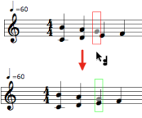
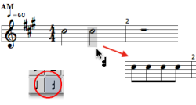
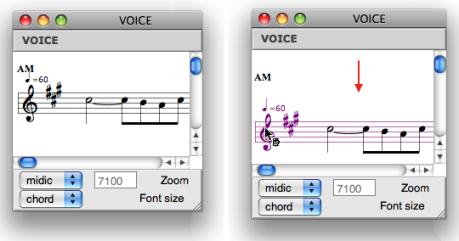
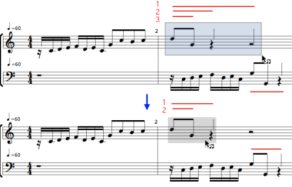

OpenMusic DocumentationHiérarchie de section : OM 6.6 User Manual > Score Objects > Score Editors > Rhythmic Objects
OpenMusic DocumentationHiérarchie de section : OM 6.6 User Manual > Score Objects > Score Editors > Rhythmic Objects
Navigation : page précédente | page suivante
Attention, votre navigateur ne supporte pas le javascript ou celui-ci à été désactivé. Certaines fonctionnalités de ce guide sont restreintes.
Rhythmic Objects : Voice Editor
The voice editor palettes shows a number of additional tools, which define hierarchic edition level.
Group tool - rhythmic groups within measures of the sequence.
 Measure tool - entire measures within the sequence.
Measure tool - entire measures within the sequence. Voice tool - seen before, more specifically dedicated to the voice object whole voice at once.
Voice tool - seen before, more specifically dedicated to the voice object whole voice at once.
Consecutive pitches are considered as chords . This must be taken into account for choosing the appropriate tool in the palette.
Entering Chords and Notes
Adding and Deleting Measures
To add measures in a poly :
select the measure tool
in the palette,Cmdclick on the left or on the right of the pre existent measure. in the palette
- To delete one or several selected measures, press
Backspace.
Converting Silences into Notes

|
Once created, a measure displays a whole pause. You can either :
To convert a whole pause into a whole note and back, select the measure tool |
To split a silence or a note into a group of equal values :
|

|
Adding Notes to Chords
Select the note or the chord tool and If you didn't click right on the chord, the note is framed in red. Use the |

|
Manipulating
Chords
To tie successive chords, press = .
To untie them, press / .
Groups
To get a group :
Individual chords cannot be grouped from the voice editor. |

|

|
To break an existing group :
|
Durations
To merge successive chords into one longer chord :
The duration of the resulting chord is equal to the sum of the merged chords. |

|
Move Staff

To move a staff up or down :
select it by clicking on the clef
use the
↓↑keys.
Staff, Voices and Measures
To apply modifications to a whole voice or measure, select the voice tool  or the measure tool
or the measure tool 
Some modifications may not be relevant. Groups cannot be broken over a whole voice, for instance.

Transposing an entire voice.
Note that if a voice consists of several staves, a selection with the voice tool applies to the whole group of staves.
Groups

The second mesure of the first voice shows three groups levels nested within each other.
Groups are represented by beams or by small vertical lines.
To break a group :
select the group tool,
select the group to break,
press
-.
If several groups are nested into each other, they are broken from the main level to the secondary levels.
Groups and Rhythm Trees Syntax :
Reminder : Groups and Rhythm Trees
Groups are written as sub lists. Here, the first sequence has one eighth notes group, the second sequence has no group. |

|
Modifying Groups From the Rhythm Tree Input
Groups cannot be created from the editor. If you modify a rhythm tree after editing the other parameters of a voice, all parameters are reset to their default value when evaluating the object.
Références :
Plan :
Navigation : page précédente | page suivante
A propos...(c) Ircam - Centre Pompidou